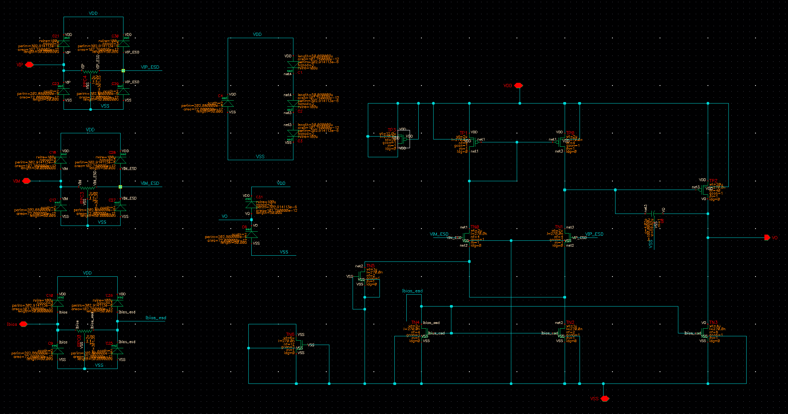
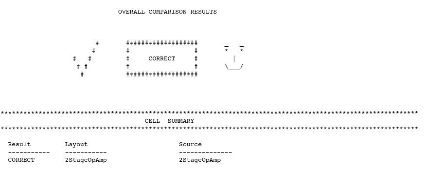

Two Stage Miller Operational Amplifier with ESD Protection
- 56.24 dB DC open-loop gain
- 61.54 dB CMRR
- 3.1 MHz GBW
- 45.76° phase margin
- Laid out an 8-transistor, 2-stage Miller op-amp (4 pF MOM capacitor) using a multi-finger floorplan (500 nm finger width, 18×6 grid including dummies) for device matching, dual guard rings (N-well + substrate), and aligned via stacks to prevent latch-up.
- Verified pre and post-layout performance via PEX simulations, achieving 56.24 dB DC open-loop gain, 61.54 dB CMRR, 3.1 MHz GBW, and 45.76° phase margin.
- Integrated 6 I/O pads (114 μm × 114 μm) with multi-layer via stacks and dual-diode / 3-diode string ESD protection (1.8 V hold-off, HBM/CDM), resolving 100% of DRC violations (antenna, latch-up, ESD) and passing LVS across base, pad integrated, and ESD-complete checkpoints.


